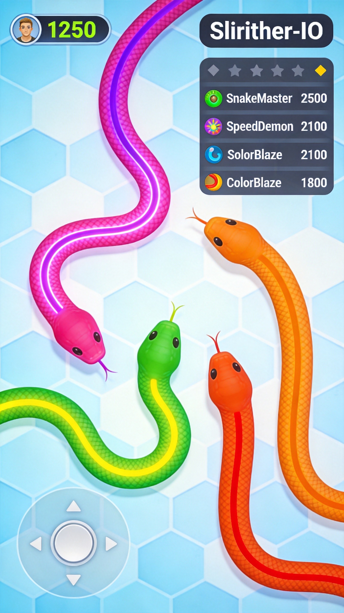
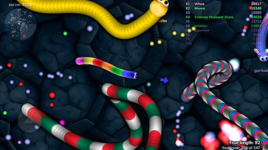
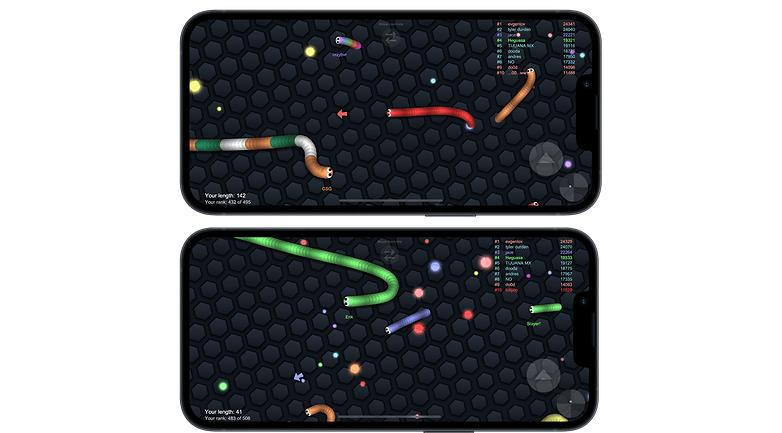
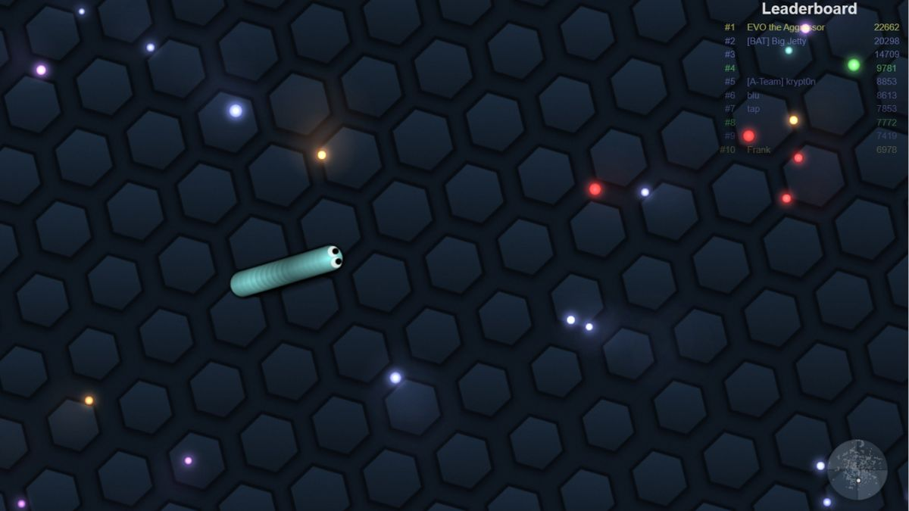

You've played Slither.io enough to know the basics. You can grow your snake, avoid head-ons, and maybe even snag a kill or two. But now you want more—you want to dominate. This advanced guide dives into the tactics that separate casual players from the snakes at the top of the leaderboard. We're talking boost baiting, circle trap construction, speed management, and the mental game that makes pros nearly impossible to kill.
🎯 Boost Baiting Fundamentals

Boost baiting is perhaps the single most important advanced technique in Slither.io. The concept is simple: make other players waste their boost while you conserve yours. Here's how it works in practice.
The Setup
Position yourself so a target thinks they can catch you. Swing wide, slow down slightly—enough that they believe they have a real chance. Most players will panic-boost when they think they're about to miss their kill. You're baiting them into burning through their length while you maintain yours.
Reading the Body Language
Watch how other snakes move. The ones about to boost will often accelerate their turns, trying to cut the angle tighter. When you see a snake suddenly jerk its head into a sharper trajectory, that's your cue to widen your path. They've taken the bait—now make them regret it.
Counter-Baiting
Be aware that good players do the same thing to you. If a snake suddenly seems easier to catch, ask yourself why. Are they in open space where they should be running? Is their movement suspiciously "predictable"? Real noobs run straight. Experienced players who look vulnerable are probably baiting you.
🔄 Circle Trap Construction

Circle traps—sometimes called snake prisons—are the ultimate encirclement tactic. When executed correctly, you can kill snakes many times your length. Here's how to build them.
The Basic Circle
Start by curving your body into a spiral that gradually expands. The goal is to create a shrinking corridor that forces your target toward the center. The key is smooth, consistent curvature. Jagged or inconsistent curves give prey escape gaps.
Practice circle building in solo mode first. Find a quiet corner of the map and just practice making perfect circles. Your body control needs to be automatic before you can execute this in combat.
When to Boost Into the Circle
One of the biggest mistakes beginners make is boosting at the wrong moment when closing a circle trap. You want to boost when you're about 60-70% closed, not when the opening is tiny. If you wait too long, the prey might boost through your tail at the last second. If you boost too early, you waste length without achieving the kill.
Reading the Prey
Watch for tells that indicate a snake is panicking. Sudden direction changes, erratic movements, and boosted acceleration are all signs. Panicked players make mistakes. They'll often boost straight into your waiting tail instead of finding the actual gap. Patience wins circle traps.
⚡ Speed Management

Boost management separates good players from great ones. Boost is length—you can't boost forever. Learning when to conserve, when to spend, and when to dump your entire reserve is the difference between top 10 and top 3.
The 20% Rule
Most experienced players follow a simple rule: never let your boost drop below 20% of your total length. This gives you an emergency escape option without completely gutting your boost reserve. If you're below 20% boost, stop boosting immediately and focus on regenerating through orb collection.
Micro-Boosting
Instead of long sustained boosts, try micro-boosting: short bursts of 0.3-0.5 seconds. This lets you navigate tight spaces while maintaining speed. It's especially useful in crowded areas where long boosts would cause you to crash into bodies or walls.
Reading the Map Tempo
The pace of the game changes throughout a match. Early game is slow, mid-game is chaotic, and late game is surgical. Adjust your speed accordingly. Early game: conserve everything. You're small, and boosting wastes your limited resources. Mid-game: use speed to secure kills and orb trails. Late game: you need every last inch to survive, so boost sparingly.
👆 The Urging Technique
Urging (sometimes called "speed swaying") is an advanced movement technique where you alternate between normal speed and brief boost bursts to change direction without significantly decelerating. This creates unpredictable movement patterns that are nearly impossible to intercept.
How to Execute
Move normally, then tap boost for a split second while simultaneously turning. Your snake will complete the turn while maintaining most of its momentum. Wait a moment, then repeat in a new direction. The result is a snake that weaves fluidly while staying fast.
Why It Works
Standard turns slow you down significantly. Your snake's head needs to "recover" speed after turning. By boosting through turns, you maintain velocity while changing direction. This makes you both faster and harder to predict—a deadly combination.
🛡️ Advanced Defensive Moves
The Emergency Spiral
If you find yourself being enclosed by a circle trap with no obvious escape, try the emergency spiral. Instead of trying to break through their wall (which rarely works), start curling into the smallest possible circle you can make. This makes your body a smaller target and often confuses the attacker enough to create an escape opportunity.
Tail Wagging
When you're significantly longer than your pursuer, you can use your tail as a weapon. Make sudden jerky movements with your tail end, trying to make it "whip" toward their head. A successful tail hit will kill them instantly. This is high-risk but can turn the tables completely.
The Fake-Out
Pretend to go one direction, then quickly change course. This works best when combined with urging. Your attacker will commit to the first direction, and by the time they adjust, you've already passed them. Commit fully to each direction change—half-hearted fakes just make you vulnerable.
🧠 The Mental Game
Slither.io is as much about psychology as mechanics. Understanding how other players think gives you massive advantages.
Patience Over Aggression
New players want to kill everything they see. Experienced players wait for the right opportunities. If a target isn't giving you an opening, don't force it. Move on and find easier prey. The leaderboard is a marathon, not a sprint.
Knowing When to Run
The biggest ego trap in Slither.io is refusing to run from a fight you can't win. If you're chasing a snake and a much larger one enters the area, take the free kill on whoever else is nearby and leave. Pride gets people killed. The orbs from a quick kill are often better than failing to catch your original target.
Reading Server Dynamics
Pay attention to patterns in how players behave. Are there coordinated teams working together? Is there a dominant snake everyone fears? Use this information. Position yourself near the dominant snake—prey will flee toward safety and often run right into you.
❓ Frequently Asked Questions

How do I know when to use boost versus when to conserve it?
Use boost aggressively in mid-game when you're medium-length and hunting. Conserve heavily early-game when you're small and late-game when you're massive. If you're below 20% boost reserve, stop using it until you recover.
What's the best way to escape a circle trap?
Prevention is best—always maintain awareness of escape routes. If you're trapped, try the emergency spiral technique. Boost through the smallest gap you can find, even if it costs significant length. Being shorter but alive is better than being dead.
How do I improve my circle trap success rate?
Practice in solo mode until smooth circles feel natural. The most common failure is boosting at the wrong time—wait until 60-70% closed. Also, choose targets carefully; experienced players will boost out of nearly complete circles, while newer players often panic into your tail.
Is urging difficult to learn?
It takes practice but isn't mechanically difficult. Start by practicing in empty areas. Focus on making smooth, quick direction changes while boosting. Within a few sessions, it should feel natural. The timing is the tricky part—too short a boost does nothing, too long wastes resources.
How do I deal with teams in Slither.io?
Team players are most dangerous when you're distracted with other prey. Focus on one threat at a time and keep the team in your peripheral vision. If a team is actively hunting you, consider finding a quiet area to rebuild length or switching servers entirely.
What mouse sensitivity do pros use?
There's no universal answer—find what works for you. Most top players use medium-high sensitivity for quick turns but not so high that precise movements become difficult. Experiment in practice matches until your movements feel natural and controlled.
📝 Conclusion

Advanced Slither.io play is about patience, resource management, and reading your opponents. The basics will keep you alive, but mastering boost baiting, circle traps, and speed management will put you at the top of the leaderboard. Remember: every snake you see is either hunting you, fleeing from you, or oblivious. Figure out which one quickly and act accordingly.
For more advanced techniques, check out our Slither.io Boost & Survival Guide or dive into our Diep.io guide to explore other io game strategies.
Last updated: January 25, 2024
Written by the iogameguide.com team